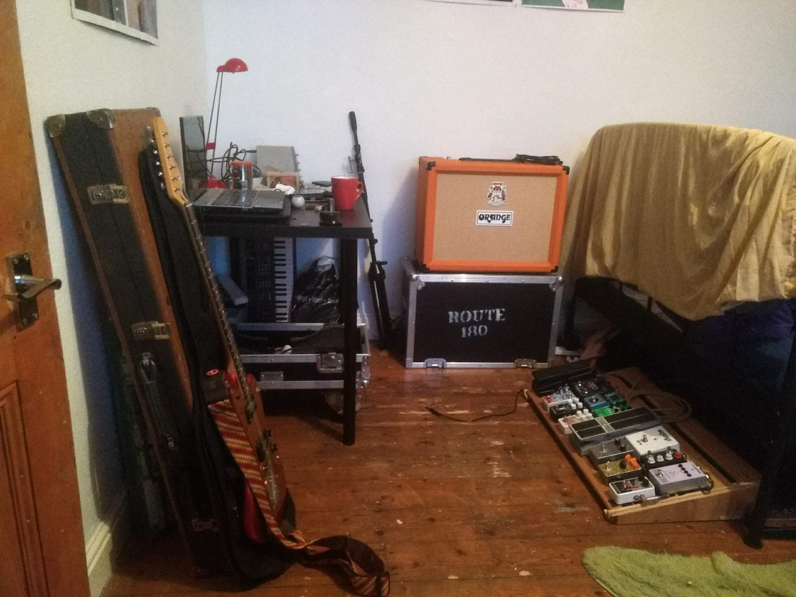

In my free time, my main hobby is playing guitar. However, for me this includes a love of making things with my own hands, including electronics (creating/ modifying pedals, sticking a soldering iron inside and altering my guitars and amplifiers) and woodwork (I have constructed my own pedalboard from scrap bits), allowing my creativity to extend beyond just playing an instrument.
I also love going to see live music, especially at small local venues, where I feel like I am supporting the bands and the music scene where I am. Every time I go to a show after a space of not going it fills my energy right back up and reminds me why music is such an important part of my life.

Recently I have been getting back into recording and producing my own music, which I have missed since leaving my degree. For the moment this is relegated to a small home studio but I might find my way back into a proper studio someday! I'm getting used to the whole setup after a while being away with CakeWalk studio, a free DAW from BandLab. I haven't uploaded anything however when I do I'm going to try and expand my SoundCloud, which right now is just tracks I made whilst in education.
Along with this I have a keen interest in trying to keep up with the latest releases in music, games and film (or at least rushing to around Oscars time every year), as well as enjoying reading. In University I was part of the student radio, where I presented a show playing songs in a theme once a week. Responsibilities for the show included planning and preparing new material every week, and being punctual for the slot, so that there were no gaps between shows. Along with this both me and my co-host found fun in creating small skits as semi-regular parts of the show - from writing and recording our own fake advertisements to weekly segments, we tried to make the show feel more like an actual radio rather than two guys sitting in a room in the SU.